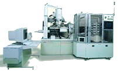

Electron
Beam Lithography
Electron
Beam
Lithography (EBL)
refers to a
lithographic process that uses
a focused beam of electrons to form
the circuit patterns needed for material deposition on (or removal from) the
wafer, in contrast with
optical lithography which uses light
for the same purpose. Electron lithography offers higher
patterning resolution than optical lithography because of the shorter
wavelength possessed by the 10-50 keV electrons that it employs.
Given the
availability of technology that allows a small-diameter focused beam of
electrons to be scanned over a surface, an EBL system doesn't need masks
anymore to perform its task (unlike optical lithography, which uses
photomasks to project the patterns). An EBL system simply 'draws'
the pattern over the resist wafer using the electron beam as its drawing
pen. Thus, EBL systems produce the resist pattern in a 'serial'
manner, making it slow compared to optical systems.
A
typical EBL
system
consists of the following parts: 1) an electron gun or electron
source that supplies the electrons; 2) an electron column that 'shapes'
and focuses the electron beam; 3) a mechanical stage that positions the
wafer under the electron beam; 4) a wafer handling system that
automatically feeds wafers to the system and unloads them after
processing; and 5) a computer system that controls the equipment.
|
 |
|
Figure 1.
Example of an electron beam lithography
equipment from Jeol |
The
resolution of optical lithography is limited by diffraction, but this is
not a problem for electron lithography. The reason for this is the
short wavelengths (0.2-0.5 angstroms) exhibited by the electrons in the
energy range that they are being used by EBL systems. However, the
resolution of an electron lithography system may be constrained by other
factors, such as
electron
scattering
in the resist and by various
aberrations
in its
electron optics.
Just like
optical lithography, electron lithography also uses positive and
negative resists, which in this case are referred to as electron beam
resists (or
e-beam resists).
E-beam resists are e-beam-sensitive materials that are used to cover the wafer
according to the defined pattern.
Positive
electron resists produce an image that is the same as the pattern drawn
by the e-beam (positive image), while negative ones produce the reverse
image of the
pattern drawn
(negative image). Positive resists undergo bond
breaking when exposed to electron bombardment, while negative resists
form bonds or cross-links between polymer chains under the same
situation.
As a result, areas of the
positive resist that are exposed to electrons become more soluble in the
developer solution, while the exposed areas of the negative resist
become less soluble. This is the reason why positive resists form
positive images - because its electron-exposed areas will result in
exposed areas on the wafer after they've dissolved in the developer. In the case of negative resists, the
electron-exposed areas will become the unexposed areas on the wafer,
forming a negative image.
The
resolution achievable with any resist is limited by two major factors:
1) the tendency of the resist to swell in the developer solution and 2)
electron scattering within the resist.
Resist
swelling
occurs as the developer penetrates the resist material. The resulting
increase in volume can distort the pattern, to the point that some
adjacent lines that are not supposed to touch become in contact with
each other.
Resist
contraction
after the resist has undergone swelling can also occur during rinsing.
However, this contraction is often not enough to bring the resist back
to its intended form, so the distortion brought about by the swelling
remains even after rinsing. Unfortunately, a swelling/contraction
cycle weakens the adhesion of the smaller features of the resist to the
substrate, which can create undulations in very narrow lines.
Reducing resist thickness decreases the resolution-limiting effects of
swelling and contraction.
When
electrons strike a material, they penetrate the material and lose energy
from atomic collisions. These collisions can cause the striking
electrons to 'scatter', a phenomenon that is aptly known as
'scattering'.
The scattering of electrons may be backward ( or back-scattering,
wherein electrons 'bounce' back), but it is often forward through small
angles with respect to the original path.
During
electron beam lithography, scattering occurs as the electron beam
interacts with the resist and substrate atoms. This electron scattering
has two major effects: 1) it
broadens
the diameter of the incident electron beam as it penetrates the resist
and substrate; and 2) it gives the resist unintended extra doses of
electron exposure as back-scattered electrons from the substrate bounce
back to the resist.
Thus,
scattering effects during e-beam lithography result in
wider
images than what can be ideally produced from the e-beam diameter,
degrading the resolution of the EBL system. In fact,
closely-spaced adjacent lines can 'add' electron exposure to each other,
a phenomenon known as
'proximity
effect.'
See Also:
Lithography/Etch;
Optical Lithography;
IC Manufacturing; Wafer Fab Equipment
HOME
Copyright
© 2004
www.EESemi.com.
All Rights Reserved.